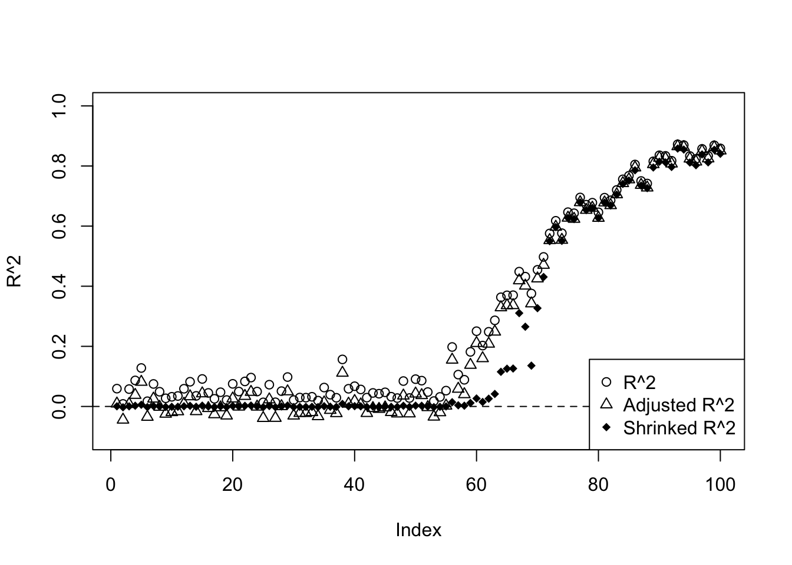
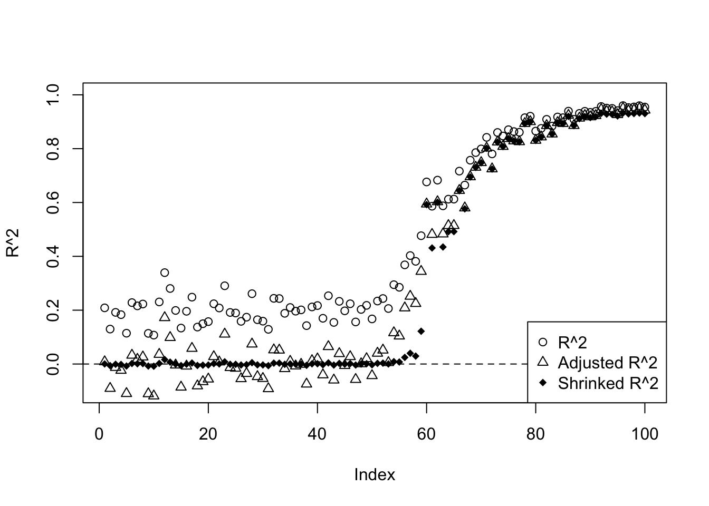

Last updated: 2019-01-16
workflowr checks: (Click a bullet for more information) ✔ R Markdown file: up-to-date
Great! Since the R Markdown file has been committed to the Git repository, you know the exact version of the code that produced these results.
✔ Environment: empty
Great job! The global environment was empty. Objects defined in the global environment can affect the analysis in your R Markdown file in unknown ways. For reproduciblity it’s best to always run the code in an empty environment.
✔ Seed:
set.seed(20180501)
The command set.seed(20180501) was run prior to running the code in the R Markdown file. Setting a seed ensures that any results that rely on randomness, e.g. subsampling or permutations, are reproducible.
✔ Session information: recorded
Great job! Recording the operating system, R version, and package versions is critical for reproducibility.
✔ Repository version: 5045f0f
wflow_publish or wflow_git_commit). workflowr only checks the R Markdown file, but you know if there are other scripts or data files that it depends on. Below is the status of the Git repository when the results were generated:
Ignored files:
Ignored: .DS_Store
Ignored: .Rhistory
Ignored: .Rproj.user/
Ignored: data/.DS_Store
Untracked files:
Untracked: analysis/chipexoeg.Rmd
Untracked: analysis/efsd.Rmd
Untracked: analysis/talk1011.Rmd
Untracked: data/chipexo_examples/
Untracked: data/chipseq_examples/
Untracked: talk.Rmd
Untracked: talk.pdf
Unstaged changes:
Modified: analysis/binomial.Rmd
Modified: analysis/fda.Rmd
Modified: analysis/index.Rmd
Modified: analysis/sigma.Rmd
| File | Version | Author | Date | Message |
|---|---|---|---|---|
| Rmd | 5045f0f | Dongyue Xie | 2019-01-16 | wflow_publish(“analysis/r2.Rmd”) |
| html | a17b894 | Dongyue Xie | 2019-01-16 | Build site. |
| Rmd | 63ff335 | Dongyue Xie | 2019-01-16 | wflow_publish(“analysis/r2.Rmd”) |
| html | 1d90590 | Dongyue Xie | 2019-01-15 | Build site. |
| Rmd | 3f6cd72 | Dongyue Xie | 2019-01-15 | wflow_publish(“analysis/r2.Rmd”) |
| html | 265a2bb | Dongyue Xie | 2019-01-15 | Build site. |
| Rmd | 15730f5 | Dongyue Xie | 2019-01-15 | wflow_publish(“analysis/r2.Rmd”) |
In multiple linear regression \(y=X\beta+\epsilon\), where \(y\in R^n\), \(X\in R^{n\times p}\) whose first column is a 1 vector, and \(\epsilon\sim N(0,\sigma^2I_n)\).
Definition of ANOVA terms:
Regression sum of squares \(SSR=\Sigma_i(\hat y_i-\bar y)^2=y^T(H-\frac{1}{n}11^T)y\). df=p-1
\(MSE=\frac{SSE}{n-p}\), \(E(MSE)=\sigma^2\); \(MSR=\frac{SSR}{p-1}\), \(E(MSR)=\sigma^2+nonnegative.quantity\)
\(\frac{MSR}{MSE}\sim F_{df_1=p-1,df_2=n-p}\).
Definition of Coefficient of Multiple correlation \(R^2\):
The proportion of the total sum of squares due to regression is \(R^2=\frac{SSR}{SST}=1-\frac{SSE}{SST}\); Adjusted R squared proposed by Ezekiel (1930): \(R_a^2=1-\frac{n-1}{n-p}\frac{SSE}{SST}\), mainly to correct 1. Adding a variable x to the model increases \(R^2\); 2. When all \(\beta\)s except intercept are 0, \(E(R^2)=\frac{p-1}{n-1}\)
Rewrite adjusted \(R^2\) as \(R_a^2=1-\frac{n-1}{n-p}\frac{SSE}{SST}=1-\frac{SSE/(n-p)}{SST/(n-1)}=1-\frac{\hat\sigma_\epsilon^2}{\hat\sigma^2_y}\) where \(\hat\sigma_\epsilon^2\) is the estimate of \(\sigma^2\) and \(\hat\sigma^2_y\) is the estimated variance of \(y\). My understanding of \(\sigma^2_y\): if no model assumption but just view \(y\) standalone, \(\sigma^2_y\) is the ‘population’ variance of y.
Now we have a ratio of sample variances, which fits into fash frame work: \(\tilde F=\log\frac{\hat\sigma_\epsilon^2}{\hat\sigma^2_y}\sim \log\frac{\sigma_\epsilon^2}{\sigma^2_y}\times F_{df_1=n-p,df_2=n-1}\). fash shrinks \(\log\frac{\sigma_\epsilon^2}{\sigma^2_y}\) towards zero hence \(\frac{\sigma_\epsilon^2}{\sigma^2_y}\) towards 1 and so shrinks \(R^2\) towards 0.
Example:
library(ashr)
set.seed(1234)
n=100
p=5
R2=c()
R2a=c()
mset=c()
R2s=c()
beta.list=seq(0,1,length.out = 100)
X=matrix(rnorm(n*(p)),n,p)
for (i in 1:length(beta.list)) {
beta=rep(beta.list[i],p)
y=X%*%beta+rnorm(n)
datax=data.frame(X=X,y=y)
mod=lm(y~X,datax)
mod.sy=summary(mod)
R2[i]=mod.sy$r.squared
R2a[i]=mod.sy$adj.r.squared
mst=sum((y-mean(y))^2)/(n-1)
mse=sum((y-fitted(mod))^2)/(n-p-1)
mset[i]=mse/mst
}
aa=ash(log(mset),1,lik=lik_logF(df1=n-p-1,df2=n-1))
R2s=1-exp(aa$result$PosteriorMean)
plot(beta.list,R2,ylim=c(-0.1,1),main='',xlab='beta',ylab='')
lines(beta.list,R2a,type='p',pch=2)
lines(beta.list,R2s,type='p',pch=18)
abline(h=0,lty=2)
legend('bottomright',c('R^2','Adjusted R^2','Shrinked R^2'),pch=c(1,2,18))| Version | Author | Date |
|---|---|---|
| a17b894 | Dongyue Xie | 2019-01-16 |
plot(beta.list,R2,ylim=c(-0.1,1),main='',xlab='beta',ylab='',type='l')
lines(beta.list,R2a,col=2)
lines(beta.list,R2s,col=4)
abline(h=0,lty=2)
legend('bottomright',c('R^2','Adjusted R^2','Shrinked R^2'),lty=c(1,1,1),col=c(1,2,4))set.seed(1234)
n=100
p=5
R2=c()
R2a=c()
mset=c()
R2s=c()
beta.list=c(rep(0,50),seq(0,1,length.out = 50))
X=matrix(rnorm(n*(p)),n,p)
for (i in 1:length(beta.list)) {
beta=rep(beta.list[i],p)
y=X%*%beta+rnorm(n)
datax=data.frame(X=X,y=y)
mod=lm(y~X,datax)
mod.sy=summary(mod)
R2[i]=mod.sy$r.squared
R2a[i]=mod.sy$adj.r.squared
mst=sum((y-mean(y))^2)/(n-1)
mse=sum((y-fitted(mod))^2)/(n-p-1)
mset[i]=mse/mst
}
aa=ash(log(mset),1,lik=lik_logF(df1=n-p-1,df2=n-1))
R2s=1-exp(aa$result$PosteriorMean)
plot(R2,ylim=c(-0.1,1),main='',ylab='R^2')
lines(R2a,type='p',pch=2)
lines(R2s,type='p',pch=18)
abline(h=0,lty=2)
legend('bottomright',c('R^2','Adjusted R^2','Shrinked R^2'),pch=c(1,2,18))
| Version | Author | Date |
|---|---|---|
| a17b894 | Dongyue Xie | 2019-01-16 |
plot(R2,ylim=c(-0.1,1),main='',ylab='R^2',type='l')
lines(R2a,col=2)
lines(R2s,col=4)
abline(h=0,lty=2)
legend('bottomright',c('R^2','Adjusted R^2','Shrinked R^2'),lty=c(1,1,1),col=c(1,2,4))set.seed(1234)
n=100
p=20
R2=c()
R2a=c()
mset=c()
R2s=c()
beta.list=c(rep(0,50),seq(0,1,length.out = 50))
X=matrix(rnorm(n*(p)),n,p)
for (i in 1:length(beta.list)) {
beta=rep(beta.list[i],p)
y=X%*%beta+rnorm(n)
datax=data.frame(X=X,y=y)
mod=lm(y~X,datax)
mod.sy=summary(mod)
R2[i]=mod.sy$r.squared
R2a[i]=mod.sy$adj.r.squared
mst=sum((y-mean(y))^2)/(n-1)
mse=sum((y-fitted(mod))^2)/(n-p-1)
mset[i]=mse/mst
}
aa=ash(log(mset),1,lik=lik_logF(df1=n-p-1,df2=n-1))
R2s=1-exp(aa$result$PosteriorMean)
plot(R2,ylim=c(-0.1,1),main='',ylab='R^2')
lines(R2a,type='p',pch=2)
lines(R2s,type='p',pch=18)
abline(h=0,lty=2)
legend('bottomright',c('R^2','Adjusted R^2','Shrinked R^2'),pch=c(1,2,18))
plot(R2,ylim=c(-0.1,1),main='',ylab='R^2',type='l')
lines(R2a,col=2)
lines(R2s,col=4)
abline(h=0,lty=2)
legend('bottomright',c('R^2','Adjusted R^2','Shrinked R^2'),lty=c(1,1,1),col=c(1,2,4))Define $ F^*=$, then \(F^*=\frac{SSR/(p-1)}{SSE/(n-p)}\sim F_{df_1=p-1,df_2=n-p}\) when \(\beta_1,...,\beta_{p-1}\) are 0. Otherwise, \(F^*\) follows non-central F distribution whose non-central parameter is \((X\beta)^T(H-\frac{11^T}{n})(X\beta)\).
sessionInfo()R version 3.5.1 (2018-07-02)
Platform: x86_64-apple-darwin15.6.0 (64-bit)
Running under: macOS High Sierra 10.13.6
Matrix products: default
BLAS: /Library/Frameworks/R.framework/Versions/3.5/Resources/lib/libRblas.0.dylib
LAPACK: /Library/Frameworks/R.framework/Versions/3.5/Resources/lib/libRlapack.dylib
locale:
[1] en_US.UTF-8/en_US.UTF-8/en_US.UTF-8/C/en_US.UTF-8/en_US.UTF-8
attached base packages:
[1] stats graphics grDevices utils datasets methods base
other attached packages:
[1] ashr_2.2-7
loaded via a namespace (and not attached):
[1] Rcpp_0.12.18 knitr_1.20 whisker_0.3-2
[4] magrittr_1.5 workflowr_1.1.1 REBayes_1.3
[7] MASS_7.3-50 pscl_1.5.2 doParallel_1.0.14
[10] SQUAREM_2017.10-1 lattice_0.20-35 foreach_1.4.4
[13] stringr_1.3.1 tools_3.5.1 parallel_3.5.1
[16] grid_3.5.1 R.oo_1.22.0 git2r_0.23.0
[19] htmltools_0.3.6 iterators_1.0.10 assertthat_0.2.0
[22] yaml_2.2.0 rprojroot_1.3-2 digest_0.6.17
[25] Matrix_1.2-14 codetools_0.2-15 R.utils_2.7.0
[28] evaluate_0.11 rmarkdown_1.10 stringi_1.2.4
[31] compiler_3.5.1 Rmosek_8.0.69 backports_1.1.2
[34] R.methodsS3_1.7.1 truncnorm_1.0-8 This reproducible R Markdown analysis was created with workflowr 1.1.1